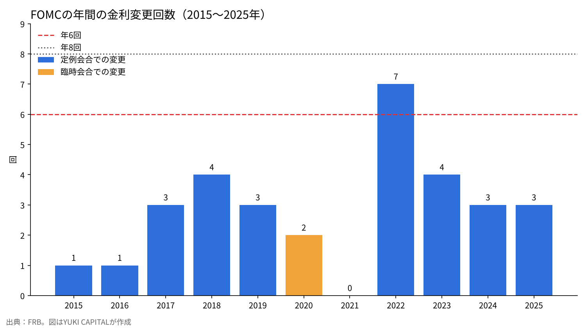
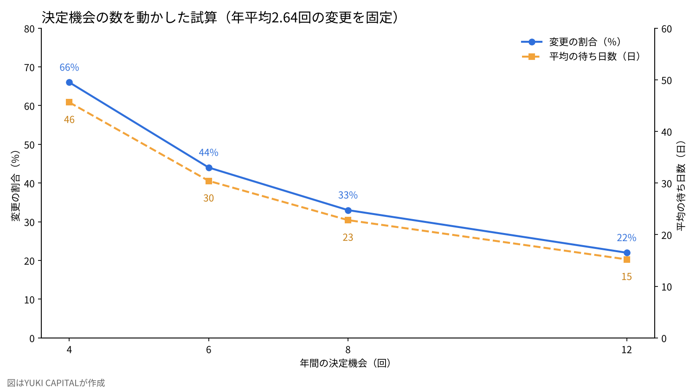

中央銀行は年に何回、金利を決めるべきか――FOMCの「年6回」と、実際に金利が動いた回数
FRBのウォーシュ議長は2026年10月28日の会見で、金利を決める機会を2027年から減らす考えを示した。年8回の会合のうち1回を戦略の討議に充て、2028年には決定が年6回になるかもしれないという。
本稿の問いは一つである。過去11年に実際に金利が動いた回数と比べて、年6回の決定機会は足りるのか。
FRB・日銀・ECB・英国・豪州・カナダの公表資料と二つの研究を使い、会合の数を4〜12回に動かした感度分析で確かめる。

問いと背景
金融政策決定会合とは、中央銀行が政策金利の水準を決める定例の会議である。米国ではFOMC（連邦公開市場委員会）がこれにあたり、政策金利はフェデラル・ファンド金利の誘導目標の幅で示される。
報道によれば、ウォーシュ議長は2026年7月の会合で年6回・約2か月ごとへの変更を提案していた。理由は「判断に使う情報がたまる時間」と「戦略を考える時間」の確保である[1][2]。10月28日の会見では、2027年は会合の一つで金利を決めず、2028年は決定が6回だけになるかもしれないと述べた[1]。8月には上院議員7人が書簡で反対し、1981年以来、少なくとも年8回の定例会合が開かれてきたと主張している[3]。
会合を減らす動きは米国が初めてではない。日銀は2016年から年14回を8回にし[4][5]、ECBは2015年から毎月を6週間ごとにした[6]。イングランド銀行（BoE）は2016年9月から12回を8回に[7]、豪州準備銀行（RBA）は2024年から11回を8回に減らした[8]。カナダ銀行は2000年から年8回の固定日制をとる[9]。
注目すべきは、BoEの削減を勧告したのがウォーシュ氏本人だという点である。2014年のBoE向けレビューで同氏は、約4週ごとの頻度は最適ではないとした。政策の効果は長い遅れを伴い、4週間では見通しを変えるだけのデータがそろわない。毎月の会合は市場の期待を必要以上に高め、準備に職員の時間も取られる、という理由である[10]。

データと方法
金利の変更回数は、FRBが公表する誘導目標の変更一覧から2015〜2025年の11年分を数えた[11]。この期間の定例会合は88回、そのうち金利を変えた会合は29回である。2020年3月の2回は会合と会合の間に開いた臨時の会合での変更で、定例会合の29回には含めない。
定例会合に限って数えたのは、会合の数を変える議論の対象が定例会合だからである。臨時の会合は、どの国でも会合の数とは別に開くことができる。
比較のため日銀も数えた。2016〜2025年の会合80回のうち、短期の政策金利を変えたのは5回である[12]。日銀は2026年にも6月と9月に利上げし、9月の決定で政策金利は1.25％程度になった[12]。
日銀は2016年から2024年までマイナス金利とイールドカーブ・コントロール（長短の金利を操作する枠組み）の時期が長く、金利の水準を変えずに買入れの額や操作の幅を動かすことが多かった。このため日銀の数字は、FRBとの単純な比較には使わず、参考として示す。
分析は二つの指標で行う。一つ目は、年間の決定機会を超える回数の金利変更が必要だった年が何年あったかである。二つ目は、決定機会1回あたりの変更の割合である。式は次のとおりである。
変更の割合＝年平均の変更回数÷年間の決定機会
2026年は10月末までの定例会合7回のうち、金利を変えたのは9月の0.25％の利上げ1回である[11]。定例会合での変更は11年で29回なので、年平均は約2.64回となる。会合の数を変えても、年に必要な変更の回数は変わらないと仮定する。
もう一つ、ショックが起きてから次の決定機会までの平均待ち日数も示す。決定機会が等間隔なら、平均の待ち日数はおよそ365÷（2×年間の決定機会）である。
結果
FOMCが金利を変えた回数は年によって大きく違う。2021年は0回、2022年は7回だった。11年のうち、6回を超えて金利を変えたのは2022年だけである。

年6回の決定機会で過去11年を振り返ると、足りなかったのは2022年の1年だけになる。その年も、1回あたりの変更幅を大きくすれば、同じ幅の利上げを6回の機会に収めることは計算上できる。実際に2022年には0.75％の利上げが4回あった[11]。
日銀は会合80回のうち5回、約6％の会合でしか短期金利を変えていない。2017〜2023年は1回も変えておらず、年8回の会合の大半は金利を据え置く場だった。一方で2026年は9月までの6会合で2回変えており、利上げの局面では日銀でも変更の割合が3割を超えている[12]。
変更の割合は、年8回なら約33％、年6回なら約44％になる。会合の約半分で金利を変えるのがよいとするGerlach-Kristenのモデルの基準ケースに近づく[13]。
| 中央銀行 | 現在の会合数 | 変更の時期 | 示された理由 | 出典 |
|---|---|---|---|---|
| FRB（FOMC） | 年8回（2027年から1回は戦略の討議） | 2027年〜（報道） | 情報の蓄積と戦略を考える時間 | [1][2] |
| 日銀 | 年8回 | 2016年1月（14回から） | 主要中銀にそろえる（民間の解説による） | [4][5] |
| ECB | 6週間ごと | 2015年1月（毎月から） | 準備預金の積み期間と合わせる | [6] |
| BoE | 年8回 | 2016年9月（12回から） | ウォーシュ・レビューの勧告 | [7][10] |
| RBA | 年8回 | 2024年（11回から） | 1回を長くして詳しく検討する | [8] |
| カナダ銀行 | 年8回（固定日） | 2000年11月 | 発表時期の不確実性を減らす | [9] |
感度分析
会合の数を年4回・6回・8回・12回と動かし、二つの指標と平均の待ち日数を計算した。年に必要な変更回数は2.64回で固定している。
| 年間の決定機会 | 変更の割合 | 機会を超える変更が必要だった年（11年中） | 次の決定までの平均待ち日数 |
|---|---|---|---|
| 4回 | 約66％ | 1年（2022年） | 約46日 |
| 6回 | 約44％ | 1年（2022年） | 約30日 |
| 8回 | 約33％ | 0年 | 約23日 |
| 12回 | 約22％ | 0年 | 約15日 |

年に必要な変更回数そのものも動かした。2.64回のほかに、2018年や2023年と同じ4回、2022年と同じ7回の場合を考える。年6回の決定機会では、変更の割合はそれぞれ約44％、約67％、約117％となる。100％を超えるのは、会合のたびに動かしても回数が足りず、1回の変更幅を大きくする以外に手がない状態を意味する。年8回なら同じ三つの場合で約33％、50％、約88％にとどまる。
8回から6回に減らして増える平均の待ち日数は、約7日である。一方、4回まで減らすと待ち日数は8回のときの2倍になり、変更の割合は3回に2回に上がる。決定のたびに金利を動かす会合に近づけば、市場は毎回の会合をより重く受け止めることになる。
考察
反対の見方もある。会合が少ないと、急な変化への対応が遅れるという心配である。2020年3月、FRBは新型コロナの拡大を受けて、2回の臨時会合で合計1.5％の利下げをした[11]。会合の数を減らした国も、臨時会合という手段は残している。イスラエル銀行は2016年に12回から8回への変更を3対1で決めたが、反対した委員は柔軟さが失われる点を挙げた[14]。
会合の数と統計の発表日の関係も論点になる。米国の雇用統計や消費者物価指数は毎月発表されるため、2か月ごとの会合では、2回分の統計を見てから判断することになる。ウォーシュ氏が2014年に挙げた「4週間ではデータがそろわない」という理由は、この点で今回の提案と一貫している[10]。
研究の結論も一方向ではない。Huizinga と Eijffinger は、調整の頻度を下げるとインフレは低くなる一方、景気の変動はやや大きくなるという関係を示した[15]。BoEの削減については、差し引きで良いとしつつ、6回の方が良かった可能性を指摘する専門家の論考もある[16]。
本稿の試算には限界がある。第一に、変更回数を固定しているが、会合が減れば1回の変更幅が大きくなり、回数そのものも変わりうる。第二に、日銀のように金利以外の手段で政策を動かした時期は数えていない。第三に、2027年のどの会合が戦略の討議になるかは、FRBの一次資料で確認できていない。答え合わせの基準は、2027年に年6回の決定で足りない局面が来るか、つまり臨時会合を開く年が出るかである。
結論
過去11年の記録に照らすと、年6回の決定機会で足りなかったのは2022年の1年だけだった。8回から6回への削減で平均の待ち日数は約7日延びるが、変更の割合はモデルが示す半分程度に近づく。4回まで減らすと、待ち日数と1回の重みが急に大きくなる。数字で見る限り、6回は過去の変更の頻度と両立できる下限に近い線だと考えられる。ただし、2022年のように物価が急に動く年には、1回の変更幅を大きくするか、臨時の会合を開く必要が出てくる。
僕はこう見ている
実を言えば、今回のFOMCの結果を見たとき、僕は特に何も考えていなかった。僕が見ているのは金利とドル円の二つで、会合の数そのものではない。
会合が6回でも8回でも、僕のやり方は変わらない。会合の前に、動かない条件を先に決めておく。今週は「ドルを円に替えない」と決めていたので、据え置きを見ても判断は変わらなかった。判断を見直すのは、会合の回数が変わったときではなく、金利とドル円が動いたときだと思っている。
出典
- Yahoo Finance「The Fed just removed a 2027 rate decision, making the remaining 7 even more important」2026年10月28日（報道・補足） https://finance.yahoo.com/economy/article/the-fed-just-removed-a-2027-rate-decision--making-the-remaining-7-even-more-important-194159258.html
- Central Banking「Warsh called for fewer FOMC meetings in July」2026年8月（報道・補足） https://www.centralbanking.com/central-banks/governance/7976682/warsh-called-for-fewer-fomc-meetings-in-july
- InsuranceNewsNet「Gallego sounds alarm on Fed Chair Warsh's plan to scale back interest rate meeting schedule」2026年8月25日（報道・補足） https://insurancenewsnet.com/oarticle/gallego-sounds-alarm-on-fed-chair-warshs-plan-to-scale-back-interest-rate-meeting-schedule
- 日本銀行「金融政策決定会合はいつ開かれるのですか？」 https://www.boj.or.jp/about/education/oshiete/seisaku/b20.htm
- 第一生命経済研究所「日銀会合の回数削減」2015年6月19日（解説・補足） https://www.dlri.co.jp/pdf/macro/2015/kuma150619BOJ.pdf
- European Central Bank「ECB to publish accounts of monetary policy meetings and move to a six-week meeting cycle」2014年7月3日 https://www.ecb.europa.eu/press/pr/date/2014/html/pr140703_1.en.html
- Bank of England「Confirmation of changes to the MPC meeting schedule」2016年5月 https://www.bankofengland.co.uk/news/2016/may/confirmation-of-changes-to-the-mpc-meeting-schedule
- Reserve Bank of Australia, Philip Lowe「The Reserve Bank Review」講演、2023年7月12日 https://www.rba.gov.au/speeches/2023/sp-gov-2023-07-12.html
- Bank of Canada「Bank of Canada to adopt fixed dates for announcing changes to official interest rate」2000年9月 https://www.bankofcanada.ca/2000/09/bank-canada-adopt-fixed-dates/
- Kevin Warsh「Transparency and the Bank of England's Monetary Policy Committee」Bank of England、2014年12月 https://www.bankofengland.co.uk/-/media/boe/files/news/2014/december/transparency-and-the-boes-mpc-review-by-kevin-warsh.pdf
- Board of Governors of the Federal Reserve System「Open Market Operations（誘導目標の変更一覧）」2026年10月29日閲覧 https://www.federalreserve.gov/monetarypolicy/openmarket.htm
- 日本銀行「当面の金融政策運営について」2026年9月18日 https://www.boj.or.jp/mopo/mpmdeci/mpr_2026/k260918b.pdf
- Petra Gerlach-Kristen「Taking two steps at a time: On the optimal pattern of policy rates」香港大学、2004年 https://hiebs.hku.hk/wp-content/uploads/2020/09/wp1074c.pdf
- Bank of Israel「Summary of the Monetary Committee discussions regarding a change in the frequency of interest rate decisions」2016年 https://boi.org.il/media/az2aqvz2/summary-of-the-monetary-committee-discussions-regarding-a-change-in-the-frequency-of-interest-rate-decisions.pdf
- Harry Huizinga, Sylvester Eijffinger「Should Monetary Policy Be Adjusted Frequently?」CEPR Discussion Paper 2074 https://cepr.org/publications/dp2074
- Charles Goodhart「The impact of changes to Bank of England meetings」World Economic Forum、2015年 https://www.weforum.org/stories/economic-growth/the-impact-of-changes-to-bank-of-england-meetings/
写真：Joshua Woroniecki、Arlind Photography（Unsplash）。図はYUKI CAPITALが作成
日々の数字と判断は、Xで記録している。